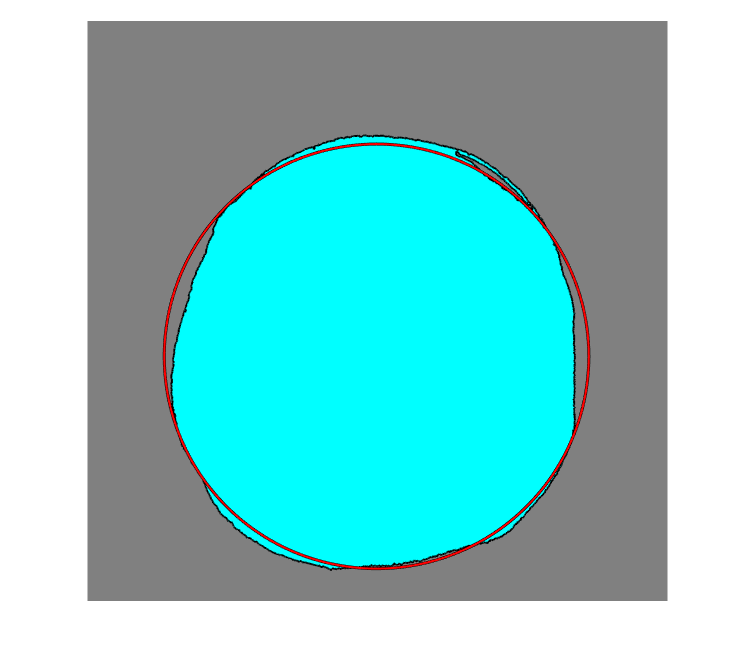

clear all
close
RGB = imread('Test.jpg');
I = rgb2gray(RGB);
r = centerCropWindow2d(size(I),[2500 2500]);
I = imcrop(I,r);
bw = imbinarize(I,'adaptive','ForegroundPolarity','dark','Sensitivity',0.3);
bw2 = imcomplement(bw);
bw2 = bwareaopen(bw2,3000);
bw = imfill(bw2,'holes');
imshow(bw)
[B,L] = bwboundaries(bw,'noholes');
imshow(label2rgb(L,@jet,[.5 .5 .5]))
hold on
for k = 1:length(B)
boundary = B{k};
plot(boundary(:,2),boundary(:,1),'w','LineWidth',2)
end
stats = regionprops('table', L,'Centroid','MajorAxisLength','MinorAxisLength','Eccentricity','Circularity')
Elongation = stats.MinorAxisLength/stats.MajorAxisLength
centers = stats.Centroid;
diameters = mean([stats.MajorAxisLength stats.MinorAxisLength],2);
radii = diameters/2;
hold on
viscircles(centers,radii);
hold off
stats =
1×5 table
Centroid MajorAxisLength MinorAxisLength Eccentricity Circularity
________________ _______________ _______________ ____________ ___________
1246.4 1446 1897 1763.3 0.3687 0.49797
Elongation =
0.9295
